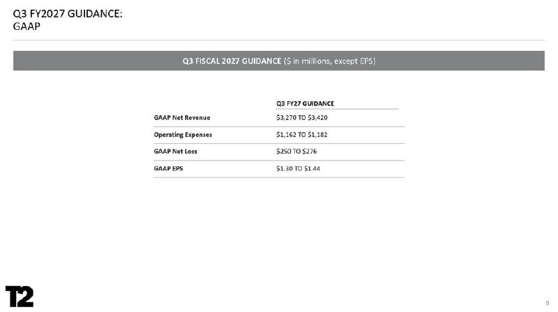
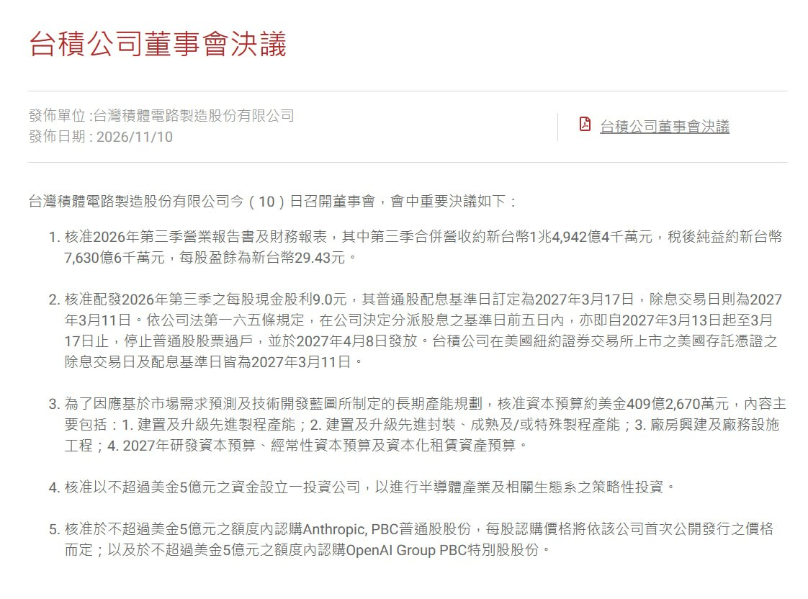

過去 26 小時共 4 則，全是實質內容，沒有業配：Take-Two（TTWO）FY27 第二季財報重點（#6541–6542），以及台積電 11/10 董事會決議（#6543–6544），其中最受注目的是擬各以最多 5 億美元入股 Anthropic 和 OpenAI。
ttwo 27q2
小幅失手，淨預訂額 16 億美元低於財測 16.2-16.7 億，缺口來自 NBA 2K27。法說的主軸是 11/19 上市的 GTA 六，說預購遠超預期，但沒上修全年財測
猜測是故意要 beat beat 樂？
- NBA 2K27 銷量約 400 萬套，是系列史上第二高的首發，但低於內部預期
- GTA VI Q3 淨預訂額財測 33.5-35 億（去年同期 17.6 億），低於 LSEG 共識
- GTA 系列強勁成長、NBA 2K 高個位數成長、手遊下滑。品牌佔比為 Rockstar 37%、Zynga 34%、2K 29%
- 手遊 Color Block Jam 雙位數下滑，Toon Blast yoy 4%，Words With Friends yoy 6%，廣告業務季增
- AI 排擠記憶體產能，Xbox Series X 已漲到 $799.99 美元，PS5 兩輪漲幅最高 33%，而 GTA VI 首發只有主機版，有可能受到影響
- PS5 的 Relapse 破解可用於 13.60 版以下韌體，近期出現數百個以 AI 反編譯的遊戲與模擬器。公司承認挑戰變大但可控
- 公司說手遊內購通常只變現約 10% 的玩家，其餘要靠廣告，並從同業互投走向品牌廣告。加上 D2C 繞過平台抽成，手遊的毛利改善來自通路與變現結構
- Zelnick 立場維持一樣，素材製作變容易，但做出大作一樣難

圖為 Take-Two 法說簡報第 9 頁「Q3 FY2027 GAAP 財測」：GAAP 營收 32.7–34.2 億美元、營業費用 11.62–11.82 億、GAAP 淨「損」2.5–2.76 億、GAAP EPS 1.30–1.44 美元。
講解
淨預訂額（net bookings）是遊戲公司最重要的營運指標：當期實際賣出的數位與實體銷售金額，不受會計上「遞延認列」影響。因為線上遊戲的營收要分期認列，看 bookings 才知道當季真正賣了多少。財報新聞稿確認 Q2 淨預訂額 16.0 億美元、年減 18%（去年同期 19.6 億，有 GTA V 等高基期），GAAP 營收 14.97 億，淨損 5,400 萬美元。全年 FY27 淨預訂額財測維持 80–82 億美元不變，跟貼文「沒上修」一致；執行長 Zelnick 說 GTA VI 預購「持續達到前所未有的水準」。
需要更正的一點：貼文寫「GTA VI Q3 淨預訂額財測 33.5–35 億」，但新聞稿中 33.5–35 億美元是整間公司 Q3（10–12 月）的淨預訂額財測，不是 GTA VI 單一遊戲的數字。當然這一季的大幅跳升主要來自 11/19 上市的 GTA VI，但公司沒有單獨揭露 GTA VI 的財測。「去年同期 17.6 億」與「低於 LSEG 共識」、前次 Q2 財測區間 16.2–16.7 億、NBA 2K27 約 400 萬套、各品牌佔比等細節，我在新聞稿中沒有讀到（可能出自法說會逐字稿），無法獨立核實。
「beat 樂」的推論：全年財測不變，代表管理層把 GTA VI 的超預期預購留作日後「打敗財測」的空間——這是貼文作者的猜測，公司沒有這樣說。保守財測在 GTA VI 這種單一巨作上很常見，因為首發銷量、退款與後續 GTA Online 變現都還有不確定性。
主機漲價風險：AI 伺服器吃掉 DRAM/NAND 產能，記憶體漲價傳導到遊戲主機售價。GTA VI 首發只出 PS5 與 Xbox Series X|S（新聞稿確認平台），主機越貴，可觸及的玩家基數越受限，這是對首發銷量的實際下行風險。
手遊結構：Zynga（2022 年併入）讓 Take-Two 手遊佔比很高。手遊只有少數玩家會付費內購，其餘靠廣告變現；D2C（直接面向消費者，例如導到自家網站付款）可避開 Apple/Google 約 15–30% 抽成，所以毛利改善主要來自「通路」與「變現方式」，而不是遊戲本身變更賺錢。
GAAP 虧損 vs. EPS：圖中 GAAP 列「淨損 2.5–2.76 億」卻同時有 EPS 1.30–1.44，兩者方向看似矛盾。依新聞稿文字，Q3 的 net income 財測為 2.5–2.76 億，簡報表頭寫成 Net Loss 可能是標示問題；以 EPS 為正數判斷，Q3 應為獲利，讀者可以留意。
（#6543 無文字，僅圖片）

圖為台積電官網「台積公司董事會決議」新聞稿（2026/11/10）截圖：Q3 合併營收約新台幣 1 兆 4,942 億元、稅後純益約 7,630 億元、EPS 29.43 元；Q3 每股現金股利 9.0 元（除息日 2027/3/11）；核准資本預算約 409.27 億美元；以不超過 5 億美元設立投資公司；以不超過 5 億美元認購 Anthropic 普通股（價格依其首次公開發行價格而定），及不超過 5 億美元認購 OpenAI Group PBC 特別股。
講解
貼文只有截圖和連結，沒有評論。重點有三：
限制與保留：MoneyDJ 報導指出，台積電公告並未揭露任何晶片採購或產能承諾，因此把這筆投資解讀為「換取訂單」或「鎖定產能」屬於推論。兩家都不是台積電的直接客戶（晶片由 NVIDIA、Broadcom 或自研 ASIC 透過設計公司下單），投資也可能涉及利益衝突的觀感（台積電一向強調中立、不與客戶競爭）。另外一項 5 億美元的投資公司用於半導體生態系策略投資，細節尚未公布。
註：Take-Two 新聞稿僅讀到前半部；未核實項目已在文中標示。